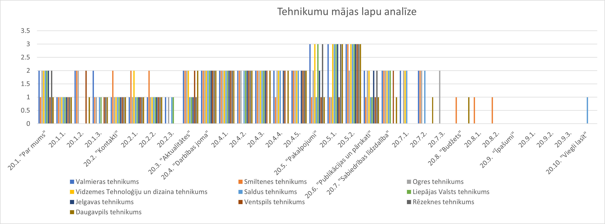

Tehnikumi 
Šajā attēlā var aplūkot kā tehnikumu mājas lapas atbilst Ministru kabineta noteikumiem Nr. 445 "Kārtība, kādā iestādes ievieto informāciju internetā". Šeit redzams, ka visatbilstošākā mājas lapa šiem noteikumiem ir Daugavpils tehnikumam, šī tehnikuma mājas lapā ir attēlota lielākā daļa prasītās informācijas. Daudzu tehnikumu mājas lapās ir attēlota nepieciešamā informācija taču tā vai nu atrodas citā sadaļā vai sadaļa ir neatbilstoši nosaukta, kā arī informācija mēdz būt nepilnīga. Visprecīzāk skolas bija norādījušas informāciju sadaļās "Par mums", "Kontakti" un "Publikācijas un pārskati". Neviens tehnikums nebija atspoguļojis sadaļu "Īpašumi", kā arī tikai daži bija atspoguļojuši sadaļas "Budžets" un "Viegli lasīt".